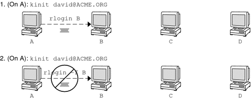

System Administration Guide: Security Services
|
|||||||||||||||||||||||||||||||||||||||||||||||||||||||
|
1. Security Services (Overview) Part II System, File, and Device Security 2. Managing Machine Security (Overview) 3. Controlling Access to Systems (Tasks) 4. Virus Scanning Service (Tasks) 5. Controlling Access to Devices (Tasks) 6. Using the Basic Audit Reporting Tool (Tasks) 7. Controlling Access to Files (Tasks) Part III Roles, Rights Profiles, and Privileges 8. Using Roles and Privileges (Overview) 9. Using Role-Based Access Control (Tasks) 10. Role-Based Access Control (Reference) Part IV Solaris Cryptographic Services 13. Solaris Cryptographic Framework (Overview) 14. Solaris Cryptographic Framework (Tasks) 15. Solaris Key Management Framework Part V Authentication Services and Secure Communication 16. Using Authentication Services (Tasks) 19. Using Solaris Secure Shell (Tasks) 20. Solaris Secure Shell (Reference) 21. Introduction to the Kerberos Service 22. Planning for the Kerberos Service 23. Configuring the Kerberos Service (Tasks) 24. Kerberos Error Messages and Troubleshooting 25. Administering Kerberos Principals and Policies (Tasks) 26. Using Kerberos Applications (Tasks) 27. The Kerberos Service (Reference) 28. Solaris Auditing (Overview) 29. Planning for Solaris Auditing 30. Managing Solaris Auditing (Tasks) |
Kerberos User CommandsKerberos V5 product is a single-sign-on system, which means that you only have to type your password once. The Kerberos V5 programs do the authenticating (and optional encrypting) for you, because Kerberos has been built into each of a suite of existing, familiar network programs. The Kerberos V5 applications are versions of existing UNIX network programs with Kerberos features added. For example, when you use a Kerberized program to connect to a remote host, the program, the KDC, and the remote host perform a set of rapid negotiations. When these negotiations are completed, your program has proven your identity on your behalf to the remote host, and the remote host has granted you access. Note that Kerberized commands try to authenticate with Kerberos first. If Kerberos authentication fails, an error occurs or UNIX authentication is attempted, depending on what options were used with the command. Refer to the Kerberos Security section in each Kerberos command man page for more detailed information. Overview of Kerberized CommandsThe Kerberized network services are programs that connect to another machine somewhere on the Internet. These programs are the following:
These programs have features that transparently use your Kerberos tickets for negotiating authentication and optional encryption with the remote host. In most cases, you'll notice only that you no longer have to type your password to use them, because Kerberos will provide proof of your identity for you. The Kerberos V5 network programs include options that enable you to do the following:
Note - This section assumes you are already familiar with the non-Kerberos versions of these programs, and highlights the Kerberos functionality added by the Kerberos V5 package. For detailed descriptions of the commands described here, see their respective man pages. The following Kerberos options have been added to ftp, rcp, rlogin, rsh, and telnet:
The following table shows which commands have specific options. An “X” indicates that the command has that option. Table 26-1 Kerberos Options for Network Commands
Additionally, ftp allows the protection level for a session to be set at its prompt:
You can also set the protection level at the ftp prompt by typing protect followed by any of the protection levels shown above (clear, private, or safe). Forwarding Kerberos TicketsAs described in Overview of Kerberized Commands, some commands allow you to forward tickets with either the -f or -F option. Forwarding tickets allows you to “chain” your network transactions. You can, for example, remotely log in to one machine and then remotely log in from it to another machine. The -f option allows you to forward a ticket, while the -F option allows you to reforward a forwarded ticket. In Figure 26-2, the user david obtains a non-forwardable ticket-granting ticket (TGT) with kinit. The ticket is non-forwardable because he did not specify the -f option. In scenario 1, he is able to remotely log in to machine B, but he can go no further. In scenario 2, the rlogin -f command fails because he is attempting to forward a ticket that is non-forwardable. Figure 26-2 Using Non-Forwardable TicketsIn actuality, Kerberos configuration files are set up so that kinit obtains forwardable tickets by default. However, your configuration might differ. For the sake of explanation, assume that kinit does not obtain forwardable TGTs unless it is invoked with kinit -f. Notice, by the way, that kinit does not have a -F option. TGTs are either forwardable or not. In Figure 26-3, the user david obtains forwardable TGTs with kinit -f. In scenario 3, he is able to reach machine C because he uses a forwardable ticket with rlogin. In scenario 4, the second rlogin fails because the ticket is not reforwardable. By using the -F option instead, as in scenario 5, the second rlogin succeeds and the ticket can be reforwarded on to machine D. Figure 26-3 Using Forwardable Tickets
Using Kerberized Commands (Examples)The following examples show how the options to the Kerberized commands work. Example 26-5 Using the -a, -f, and -x Options With telnetIn this example, the user david has already logged in, and wants to telnet to the machine denver.example.com. He uses the -f option to forward his existing tickets, the -x option to encrypt the session, and the -a option to perform the login automatically. Because he does not plan to use the services of a third host, he can use -f instead of -F. % telnet -a -f -x denver.example.com Trying 128.0.0.5... Connected to denver.example.com. Escape character is '^]'. [ Kerberos V5 accepts you as "david@eng.example.com" ] [ Kerberos V5 accepted forwarded credentials ] SunOS 5.9: Tue May 21 00:31:42 EDT 2004 Welcome to SunOS % Notice that david's machine used Kerberos to authenticate him to denver.example.com, and logged him in automatically as himself. He had an encrypted session, a copy of his tickets already waiting for him, and he never had to type his password. If he had used a non-Kerberos version of telnet, he would have been prompted for his password, and it would have been sent over the network unencrypted. If an intruder had been watching network traffic at the time, the intruder would have known david's password. If you forward your Kerberos tickets, telnet (as well as the other commands discussed here) destroys them when it exits. Example 26-6 Using rlogin With the -F OptionHere, the user jennifer wants to log in to her own machine, boston.example.com. She forwards her existing tickets with the -F option, and encrypts the session with the -x option. She chooses -F rather than -f because after she is logged in to boston, she might want to perform other network transactions requiring tickets to be reforwarded. Also, because she is forwarding her existing tickets, she does not have to type her password. % rlogin boston.example.com -F -x This rlogin session is using encryption for all transmissions. Last login Mon May 19 15:19:49 from daffodil SunOS Release 5.9 (GENERIC) #2 Tue Nov 14 18:09:3 EST 2003 % Example 26-7 Setting the Protection Level in ftpSuppose that joe wants to use ftp to get his mail from the directory ~joe/MAIL from the machine denver.example.com, encrypting the session. The exchange would look like the following: % ftp -f denver.example.com Connected to denver.example.com 220 denver.example.org FTP server (Version 6.0) ready. 334 Using authentication type GSSAPI; ADAT must follow GSSAPI accepted as authentication type GSSAPI authentication succeeded Name (daffodil.example.org:joe) 232 GSSAPI user joe@MELPOMENE.EXAMPLE.COM is authorized as joe 230 User joe logged in. Remote system type is UNIX. Using BINARY mode to transfer files. ftp> protect private 200 Protection level set to Private ftp> cd ~joe/MAIL 250 CWD command successful. ftp> get RMAIL 227 Entering Passive Mode (128,0,0,5,16,49) 150 Opening BINARY mode data connection for RMAIL (158336 bytes). 226 Transfer complete. 158336 bytes received in 1.9 seconds (1.4e+02 Kbytes/s) ftp> quit % To encrypt the session, joe sets the protection level to private. |
||||||||||||||||||||||||||||||||||||||||||||||||||||||
|